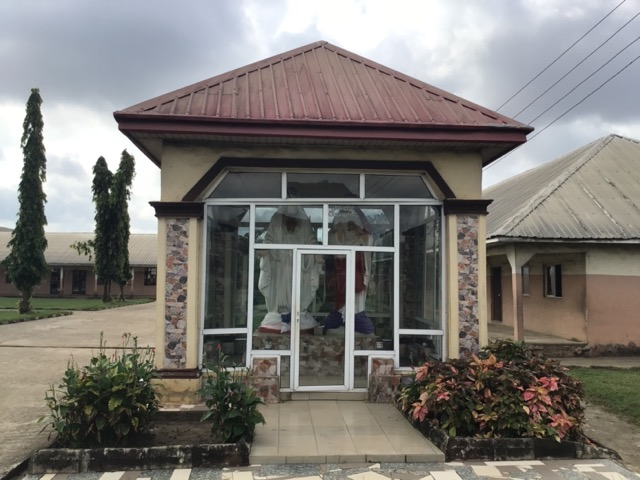

Sacred Heart College
SAHARCO · Eziukwu Aba
Everything SAHARCO does is anchored to a clear purpose: forming young men of deep faith, strong character, and academic excellence who will go out and bear witness to the truth in the world.
"For this I was born, and for this I have come into the world,
to bear witness to the truth. Everyone who is of the truth hears my voice."
Our mission defines why we exist; our vision describes where we are going. Together they form the compass that orients every decision made at Sacred Heart College — from curriculum design to pastoral care.
To provide an excellent Catholic secondary education that forms young men of strong faith, sound character, and academic distinction — equipping them to bear witness to truth and to serve God and humanity with integrity, competence, and compassion.
Rooted in the spirituality of the Sacred Heart of Jesus and guided by the Catholic Diocese of Aba, we believe that a truly educated person is not merely technically proficient but morally formed, spiritually alive, and socially responsible.
To be the leading Catholic secondary school in South-East Nigeria — a community of excellence where faith and reason flourish together, where every graduate is prepared for leadership in every arena of life, and where the name of Sacred Heart College stands as a synonym for integrity and distinction.
We envision a SAHARCO that continues to raise the standard — investing in faculty excellence, modern facilities, digital literacy, and spiritual depth — so that every young man who passes through our gates is equipped for the challenges of the 21st century while remaining firmly anchored in eternal values.
Sacred Heart College holds that education is the development of the whole person — mind, soul, and body. We reject the reduction of schooling to mere examination preparation. Academics, spiritual formation, discipline, co-curricular engagement, and community service are not competing priorities; they are facets of one integrated vision of human excellence.
This philosophy flows directly from the Catholic intellectual tradition, which has always insisted that faith and reason are not adversaries but partners — that the search for truth in the laboratory and the search for God in prayer are both expressions of the same fundamental human longing. At SAHARCO, that conviction shapes everything from how we teach science to how we conduct morning assembly.
"Train up a child in the way he should go,
and when he is old he will not depart from it."

"We do not simply want men who know things. We want men who are something — men of conscience, courage, and compassion."
These eight values are not a list of rules. They are a description of the kind of man SAHARCO forms — a man capable of standing for truth when it is inconvenient, of serving others when it is costly, and of pursuing excellence when mediocrity would suffice.
Every activity, every lesson, every tradition at Sacred Heart College is oriented toward developing these qualities in each student — not because it makes good policy, but because the formation of good men is the reason this school exists.


The Catholic tradition has been producing great schools for centuries — not by accident, but because it holds a rich and coherent understanding of the human person and the purpose of education. Sacred Heart College is proudly heir to that tradition.
Spiritual formation is not a department at Sacred Heart College — it is the atmosphere of the whole school. Every aspect of life at SAHARCO is ordered toward helping students grow in their relationship with God and their understanding of what it means to live well.
Our mission is not mere aspiration — it has produced measurable results across generations of students who have gone on to distinguish themselves in every field.
These are not promises we make lightly. They represent the standards every teacher, administrator, and student at SAHARCO is held to.